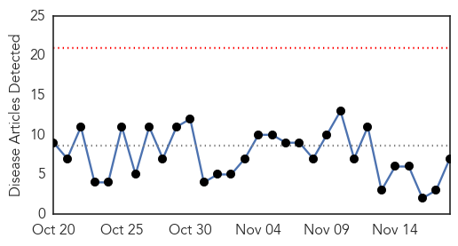
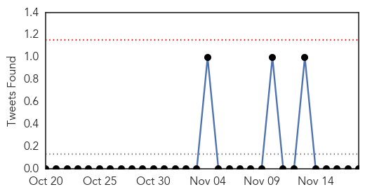
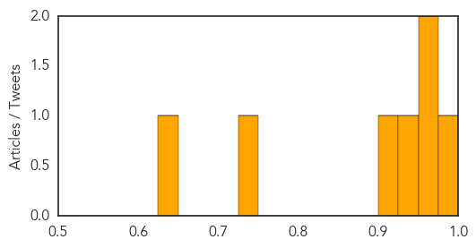
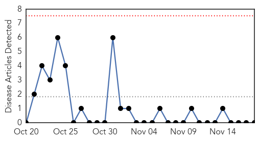

Dengue Fever
30-Day Web Trend
0 alerts, 0 warnings

30-Day Twitter Trend
0 alerts, 0 warnings

Article Locations

Article Confidences
Top Articles:
- 0.985
- Will dengue succumb to BMC action in Mumbai?
- 0.974
- Dengue: Deconstructing the dread
- 0.951
- 41-year-old Mulund woman dies of ‘dengue’, toll so far this year reaches 14
- 0.942
- Tests on to check for dengue virus mutation
- 0.917
- Issue guidelines to doctors, labs and the public for tests
- 0.740
- EPA confers with health authorities to step up battle against dengue in south
- 0.629
- MCD rope in schools to fight dengue
Top Tweets:
-
No tweets found for Nov 18, 2014
West Nile Virus
30-Day Web Trend
0 alerts, 0 warnings

30-Day Twitter Trend
0 alerts, 0 warnings

Article Locations

Article Confidences

Top Articles:
-
No articles found for Nov 18, 2014
Top Tweets:
-
No tweets found for Nov 18, 2014